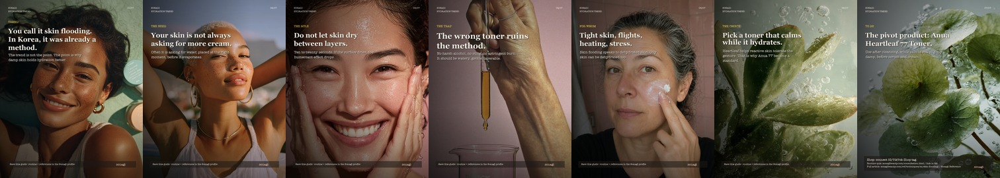
English version. No French diagrams inserted where no English equivalent exists.
English version.
English diagrams used where available.
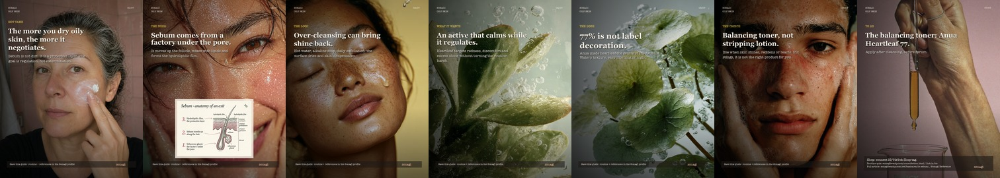
English sebum diagram used.
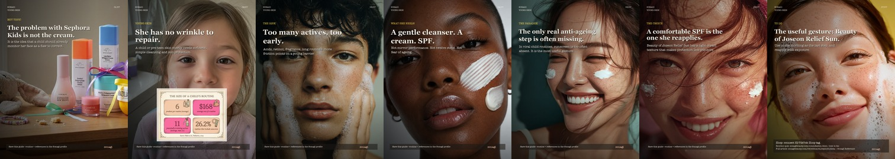
Uses the exact Sephora Kids article hero first and English article diagram.
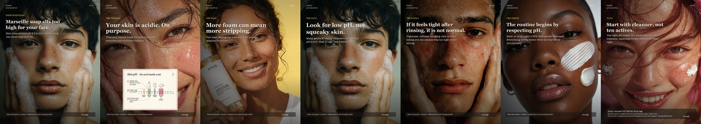
English pH diagram used.
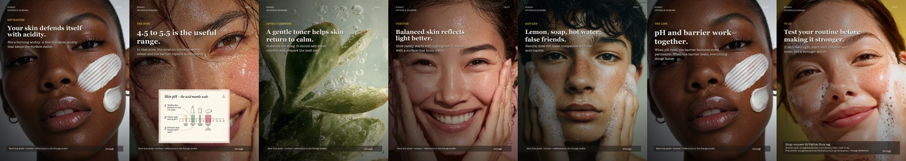
English pH diagram used.
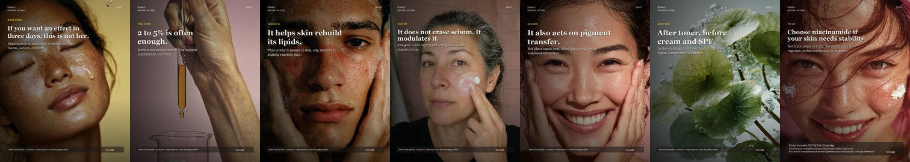
No French diagram inserted because English mechanism file is missing.
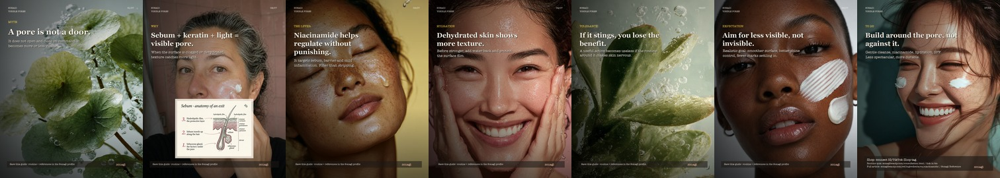
English sebum diagram used.
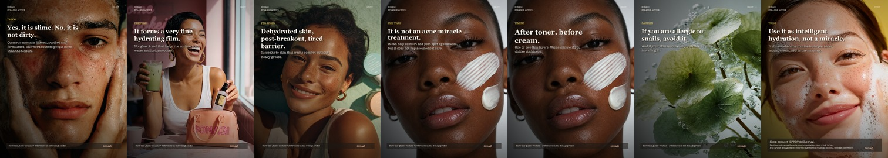
No French diagram inserted because English mechanism file is missing.
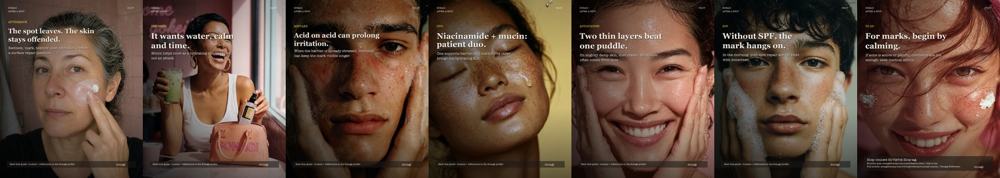
No French diagram inserted because English mechanism file is missing.
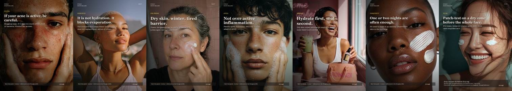
No French diagram inserted because English mechanism file is missing.
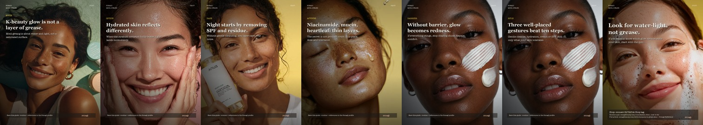
No French diagram inserted because English mechanism file is missing.
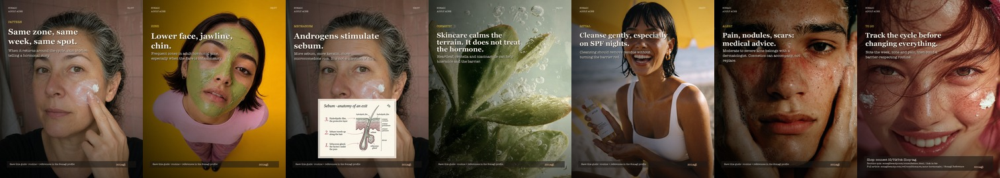
English sebum diagram used where available.
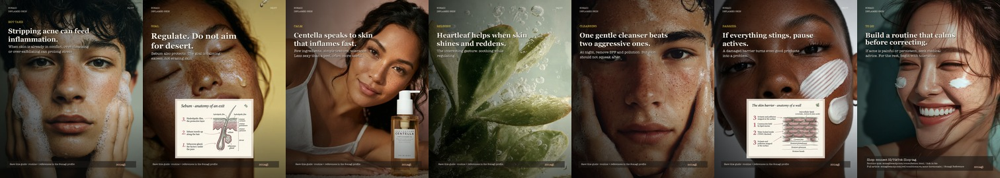
English sebum and barrier diagrams used where available.